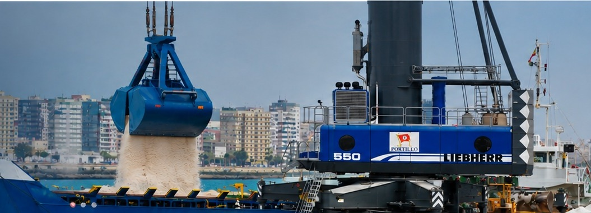
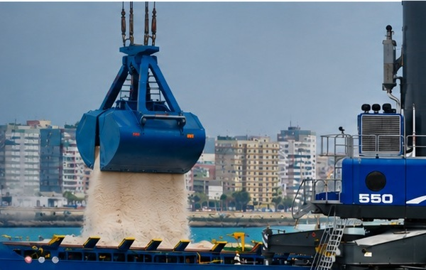

Un testimonio del origen
La historia corporativa conserva una referencia gráfica de la botadura del buque Christian, ligada a los primeros años del negocio familiar en Cádiz.

AGENCIA MARÍTIMA PORTILLO
Experiencia portuaria, coordinación logística y atención cercana para conectar mercancías, buques y destinos.
¿Ya eres cliente?Accede al control de salidas y stock
QUIÉNES SOMOS
Agencia Marítima Portillo es una empresa de tradición familiar cuya actividad está centrada en el sector marítimo. A lo largo de más de un siglo, la gestión portuaria, la consignación y la logística han formado parte de su trayectoria.
Desde su implantación en el entorno de la Bahía de Cádiz, la compañía ha evolucionado junto al comercio marítimo, ampliando sus servicios y colaboraciones para atender las necesidades operativas de cada cliente.
Conoce nuestra historiaNUESTRA HISTORIA
La trayectoria publicada por la compañía sitúa sus raíces en el comercio marítimo entre el norte de Europa y Cádiz.
Leer la historia en la web oficialLa historia corporativa conserva una referencia gráfica de la botadura del buque Christian, ligada a los primeros años del negocio familiar en Cádiz.
La actividad se amplió con servicios de consignación, fletamentos, aduanas y embarques marítimos vinculados al entorno de Cádiz y su provincia.
La empresa presenta una oferta que integra operaciones portuarias, almacenaje, consignación de buques, tránsitos y gestiones aduaneras.
QUÉ HACEMOS
Un punto de contacto para coordinar necesidades marítimas, documentales y logísticas desde el puerto.
Operaciones de carga y descarga de mercancías en el entorno portuario, con coordinación de los recursos y necesidades de cada escala.
Consultar servicioAlmacenamiento y logística portuaria para graneles sólidos y mercancía general, con operaciones de recepción, almacenamiento y entrega.
Consultar servicioRepresentación del buque y coordinación de trámites y necesidades comerciales y operativas durante la escala portuaria.
Consultar servicioCoordinación de transporte y comunicación entre las partes implicadas para ayudar a optimizar tiempos y continuidad de la mercancía.
Consultar servicioApoyo en despachos de importación y exportación, tránsitos, despachos parciales y documentación aduanera según la operación.
Consultar servicioÁREA DE CLIENTES
Accede al portal de clientes para consultar el control de salidas y stock a través de la plataforma Transkal.
ACTUALIDAD
 OPERACIONES PORTUARIAS
OPERACIONES PORTUARIAS Una noticia de la actividad portuaria publicada por la compañía en noviembre de 2023.
Leer en la web oficial ALMACENAJE
ALMACENAJE Información sobre instalaciones para mercancía general, especialmente cereales, en la Dársena del Cuarto.
Leer en la web oficial INFRAESTRUCTURAS
INFRAESTRUCTURAS Proyecto de almacenamiento para mercancía general en la margen izquierda de la Dársena del Cuarto.
Leer en la web oficialLas noticias mostradas son una selección de publicaciones de la web corporativa original; consulta el sitio oficial para el contenido completo.
CONTACTO
Cuéntanos qué necesitas y te indicaremos el canal de contacto más adecuado.
+34 956 47 90 00info@amportillo.comVer todos los contactosCalle Bolivia, 8–10
11510 Puerto Real (Cádiz)
Ctra. del Copero s/n
41012 Sevilla
Entra al portal Transkal con tus credenciales corporativas.
Abrir portal de clientes